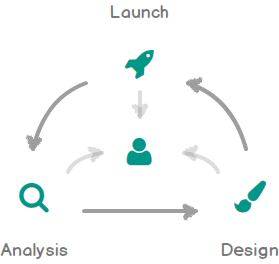

Doing great design is one thing, communicating great design is equally as important.
Scale of your project? User feedback? Available budget? Resources? Uncomfortable dealines? Well, it all depends. The UX process that we will adopt for your next big thing will depend upon various factors and situations. And yes, it will be revisted and evolved over time. However, with my experience, at the core, following are the techniques I use:
